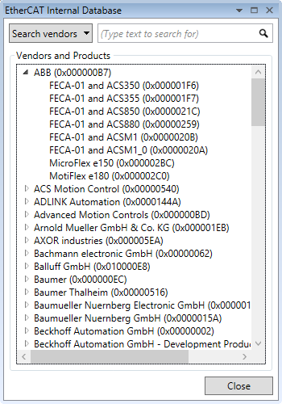
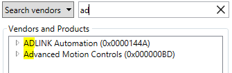
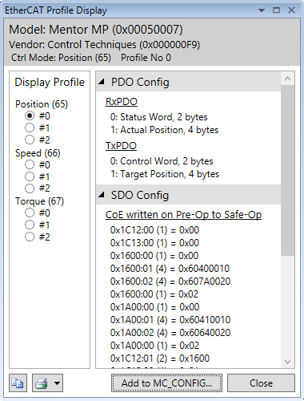
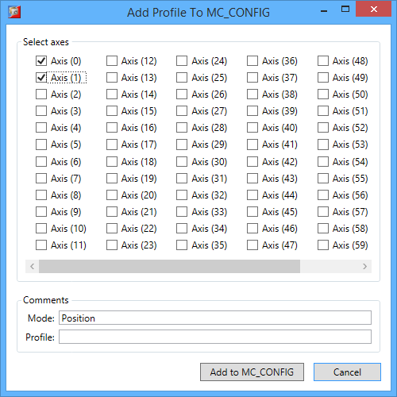
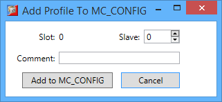

The controller contains an internal database of known EtherCAT devices. It is structured hierarchically by vendor and then by device provided by a given vendor. For each device one or more profiles are defined containing configuration information like:

This window displays a list of all known vendors, and for each vendor, all known devices. For each vendor and device its name and unique identification number is displayed in hexadecimal form. By double-clicking on particular device a new window is displayed containing profile information.
It is possible to search the database by vendor or device name or Id. The type of the search is selected with the drop-down button.

By typing in the text are the list is filtered and only entries that match remain visible. The text that matches the search criteria is highlighted.

Profile viewer display following configuration information stored in selected profile:
If several profiles and/or control modes are supported by given device then on the left side of the viewer a selection in form of radio-buttons is displayed. The information on the right side of the viewer is updated correspondingly when selecting other control mode or profile number.
Profile information in form of a report can be copied to the clipboard or printed by pressing and buttons respectively.
Adding the selected combination of control mode and profile number directly to the MC_CONFIG can be done by pressing “Add to MC_CONFIG” button.
Depending on whether the device is a drive or not a different dialog box is displayed.

It is possible to select axes for which the desired configuration will be applied. In order to make MC_CONFIG easier to read the customer is given option to add a comment for both the control mode and profile number to be set. By pressing “Add to MC_CONFIG” button the selected configuration is stored in the MC_CONFIG file.

For non-drive device types, only the profile number is subject to configuration. The user is given the option to select the slave number on the EtherCAT bus to which the profile configuration will be applied. It is also possible to enter a comment in order to improve MC_CONFIG file readability. By pressing “Add to MC_CONFIG” button the selected configuration is stored in the MC_CONFIG file.